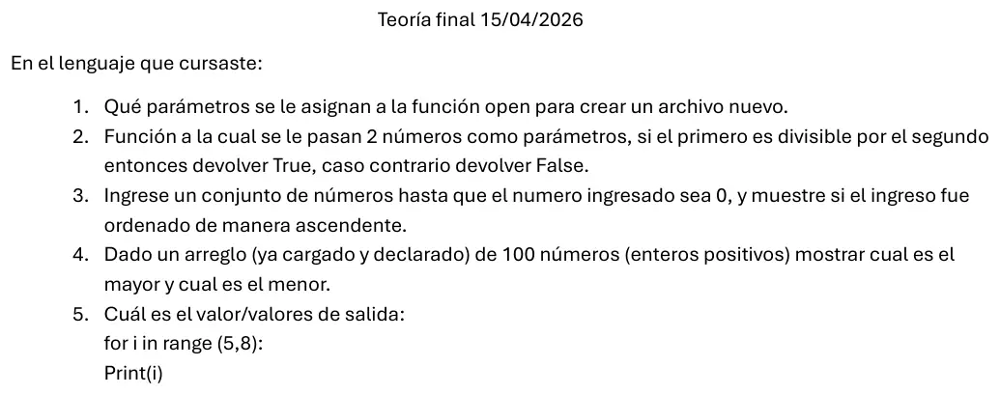
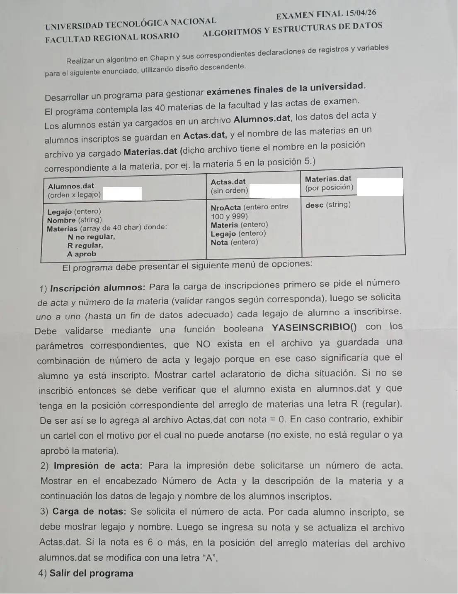

Final, 15/04/2026 (Actas de examen)
3° parcial y final, 15/04/2026
Enunciado




Propuesta de respuesta
Respuesta no verificada. La propuso Luta Studios con inteligencia artificial y ningún docente la revisó. Puede tener errores.
La hoja pide el diagrama de Chapin. Va un diagrama por módulo, con su declaración de variables arriba, y primero el del programa principal. Si un diagrama no entra en la pantalla, tocalo para verlo completo. Después de los diagramas está el mismo algoritmo en Python, para que lo puedas probar. Las sentencias de archivos van con las palabras reservadas de Python (open, pickle.load, pickle.dump, seek, tell). Los textos se completan con ljust para que los registros midan lo mismo. El tamaño de un registro sale de tell() después de leer el primero.
Programa principal y menú
Registros y archivos
1) Inscripción alumnos
2) Impresión de acta
3) Carga de notas
El mismo algoritmo en Python
Es el programa que se probó, con las mismas sentencias y en el mismo orden que las cajas. Cada Leer del diagrama es un input, convertido a int o float según la declaración, y cada Mostrar es un print.
import os
import pickle
class Alumno:
def __init__(self):
self.legajo = 0
self.nombre = ""
self.materias = ["N"]*40
class Acta:
def __init__(self):
self.nroActa = 0
self.materia = 0
self.legajo = 0
self.nota = 0
class Materia:
def __init__(self):
self.desc = ""
# afAlumnos, afActas, afMaterias: str (ruta física)
# alAlumnos, alActas, alMaterias: archivo
# tamAlu, tamMat: int
afAlumnos = "Alumnos.dat"
afActas = "Actas.dat"
afMaterias = "Materias.dat"
def TAM_REG(al):
# al: archivo
# t: int
al.seek(0, 0)
pickle.load(al)
t = al.tell()
al.seek(0, 0)
return t
def ABRIR():
global alAlumnos, alActas, alMaterias, tamAlu, tamMat
alAlumnos = open(afAlumnos, "r+b")
alMaterias = open(afMaterias, "rb")
if os.path.exists(afActas):
alActas = open(afActas, "r+b")
else:
alActas = open(afActas, "w+b")
tamAlu = TAM_REG(alAlumnos)
tamMat = TAM_REG(alMaterias)
def LEER_RANGO(mensaje, desde, hasta):
# mensaje: str
# desde, hasta, x: int
x = int(input(mensaje))
while x < desde or x > hasta:
x = int(input("Fuera de rango: "))
return x
def BUSCA_ALUMNO(leg):
# Dicotómica: Alumnos.dat está ordenado por legajo
# leg, inicio, fin, medio, pos: int
# reg: Alumno
inicio = 0
fin = os.path.getsize(afAlumnos) // tamAlu - 1
pos = -1
while inicio <= fin and pos == -1:
medio = (inicio + fin) // 2
alAlumnos.seek(medio * tamAlu, 0)
reg = pickle.load(alAlumnos)
if reg.legajo == leg:
pos = medio
elif leg < reg.legajo:
fin = medio - 1
else:
inicio = medio + 1
return pos
def YASEINSCRIBIO(nro, leg):
# nro, leg, tam: int
# esta: bool
# reg: Acta
tam = os.path.getsize(afActas)
esta = False
alActas.seek(0, 0)
while alActas.tell() < tam and not esta:
reg = pickle.load(alActas)
if reg.nroActa == nro and reg.legajo == leg:
esta = True
return esta
def INSCRIPCION():
# nro, mat, leg, pos: int
# alu: Alumno
# acta: Acta
nro = LEER_RANGO("Número de acta (100 a 999): ", 100, 999)
mat = LEER_RANGO("Número de materia (1 a 40): ", 1, 40)
leg = int(input("Legajo (0 para terminar): "))
while leg != 0:
if YASEINSCRIBIO(nro, leg):
print("El alumno ya está inscripto en esta acta")
else:
pos = BUSCA_ALUMNO(leg)
if pos == -1:
print("No existe el alumno")
else:
alAlumnos.seek(pos * tamAlu, 0)
alu = pickle.load(alAlumnos)
if alu.materias[mat - 1] == "R":
acta = Acta()
acta.nroActa = nro
acta.materia = mat
acta.legajo = leg
acta.nota = 0
alActas.seek(0, 2)
pickle.dump(acta, alActas)
alActas.flush()
print("Inscripto")
elif alu.materias[mat - 1] == "A":
print("No puede anotarse: ya aprobó la materia")
else:
print("No puede anotarse: no está regular")
leg = int(input("Legajo (0 para terminar): "))
def NOMBRE_ALUMNO(leg):
# leg, pos: int
# alu: Alumno
pos = BUSCA_ALUMNO(leg)
alAlumnos.seek(pos * tamAlu, 0)
alu = pickle.load(alAlumnos)
return alu.nombre
def IMPRESION():
# nro, tam: int
# hay: bool
# reg: Acta
# mat: Materia
nro = LEER_RANGO("Número de acta (100 a 999): ", 100, 999)
tam = os.path.getsize(afActas)
hay = False
alActas.seek(0, 0)
while alActas.tell() < tam:
reg = pickle.load(alActas)
if reg.nroActa == nro:
if not hay:
alMaterias.seek((reg.materia - 1) * tamMat, 0)
mat = pickle.load(alMaterias)
print("Acta", nro, "-", mat.desc)
hay = True
print(reg.legajo, NOMBRE_ALUMNO(reg.legajo))
if not hay:
print("No hay inscriptos en esa acta")
def CARGA_NOTAS():
# nro, tam, pos, posAlu: int
# hay: bool
# reg: Acta
# alu: Alumno
nro = LEER_RANGO("Número de acta (100 a 999): ", 100, 999)
tam = os.path.getsize(afActas)
hay = False
alActas.seek(0, 0)
while alActas.tell() < tam:
pos = alActas.tell()
reg = pickle.load(alActas)
if reg.nroActa == nro:
hay = True
posAlu = BUSCA_ALUMNO(reg.legajo)
alAlumnos.seek(posAlu * tamAlu, 0)
alu = pickle.load(alAlumnos)
print(alu.legajo, alu.nombre)
reg.nota = LEER_RANGO("Nota (0 a 10): ", 0, 10)
alActas.seek(pos, 0)
pickle.dump(reg, alActas)
alActas.flush()
if reg.nota >= 6:
alu.materias[reg.materia - 1] = "A"
alAlumnos.seek(posAlu * tamAlu, 0)
pickle.dump(alu, alAlumnos)
alAlumnos.flush()
if not hay:
print("No hay inscriptos en esa acta")
# Programa principal
# opcion: int
ABRIR()
opcion = 0
while opcion != 4:
print("1) Inscripción alumnos")
print("2) Impresión de acta")
print("3) Carga de notas")
print("4) Salir del programa")
opcion = LEER_RANGO("Opción: ", 1, 4)
match opcion:
case 1:
INSCRIPCION()
case 2:
IMPRESION()
case 3:
CARGA_NOTAS()
alAlumnos.close()
alActas.close()
alMaterias.close()Teoría 1
Para crear un archivo nuevo, open recibe la ruta y el modo "wb" (solo grabación) o "w+b" (grabación y lectura). Los dos lo crean y, si ya existía, borran su contenido. Por ejemplo alActas = open("Actas.dat", "w+b").
Teoría 2
La hoja pide la teoría «en el lenguaje que cursaste», así que estas partes van en Python, sin Chapin.
def DIVISIBLE(a, b):
# a, b: int
return a % b == 0Teoría 3
# x, ant: int
# ascendente: bool
ascendente = True
x = int(input("Número (0 para terminar): "))
ant = x
while x != 0:
if x < ant:
ascendente = False
ant = x
x = int(input("Número (0 para terminar): "))
if ascendente:
print("El ingreso fue ascendente")
else:
print("El ingreso no fue ascendente")Teoría 4
# V: arreglo [0..99] de int (ya cargado y declarado)
# i, mayor, menor: int
mayor = V[0]
menor = V[0]
for i in range(1, 100):
if V[i] > mayor:
mayor = V[i]
if V[i] < menor:
menor = V[i]
print("Mayor:", mayor, "- menor:", menor)Teoría 5
Muestra 5, 6 y 7, uno por renglón. range(5, 8) arranca en 5 y termina antes del 8.
Respuesta no verificada. Puede tener errores.
Se armó con la hoja del examen y la página del 3° parcial y final (registros como clase, recorrer, búsquedas, actualizar un registro y alta). Las operaciones de archivos siguen las diapositivas de merge y corte de control. El Chapin sigue la forma de las diapositivas del examen de Historia Clínica de 2019. La teoría sale de la tabla de modos de apertura y de las páginas del 1° y 2° parcial.
Quedó en duda: «La materia 5 en la posición 5» se leyó como el registro 4 contando desde 0, es decir (materia - 1) * tamMat. Si en tu archivo la posición 0 queda vacía, va materia * tamMat. Actas.dat se abre con r+b si existe y con w+b si no, porque la hoja no dice si ya está creado. Los modos de open (rb, r+b, w+b) salen de la tabla de dos resúmenes de alumnos, que ningún apunte de la cátedra trae. Las letras del arreglo de materias se cambian en el lugar, y pickle guarda una sola vez dos textos iguales de una letra. Si un alumno con dos R aprueba una y no tenía ninguna A, su registro crece 2 bytes. Entonces deja de coincidir con la posición que calcula la dicotómica. El material solo muestra ljust para textos. El legajo 0 corta la inscripción. En la teoría 3, un ingreso que arranca con 0 o con un solo número se toma como ascendente. Dos números iguales seguidos no lo cortan. En la teoría 5 la hoja escribe Print con mayúscula. Python distingue mayúsculas, así que tal cual daría error. La respuesta lo toma como print. Las diapositivas de la materia no muestran en Chapin la lectura de datos ni la selección múltiple. Acá van como Leer y como Según, con una columna por caso.
¿Cómo te fue?
Marcá cada tema del examen.
- ArchivosSecuencial y de acceso directo, en 3° parcial y final
- BúsquedaBúsqueda secuencial, en 2° parcial
- TeoríaLa parte de teoría, en 3° parcial y final